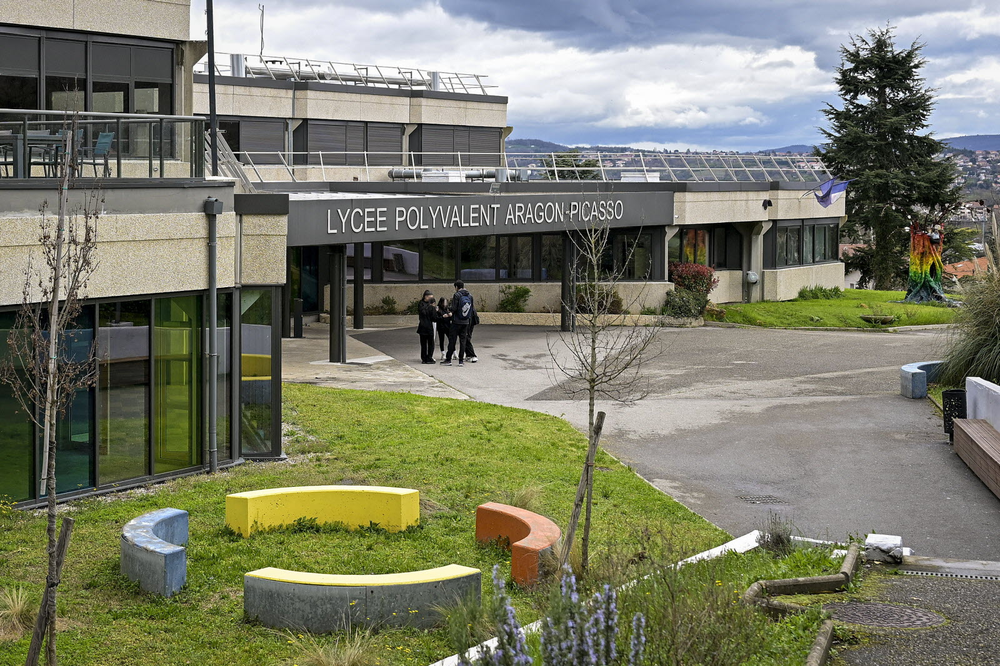
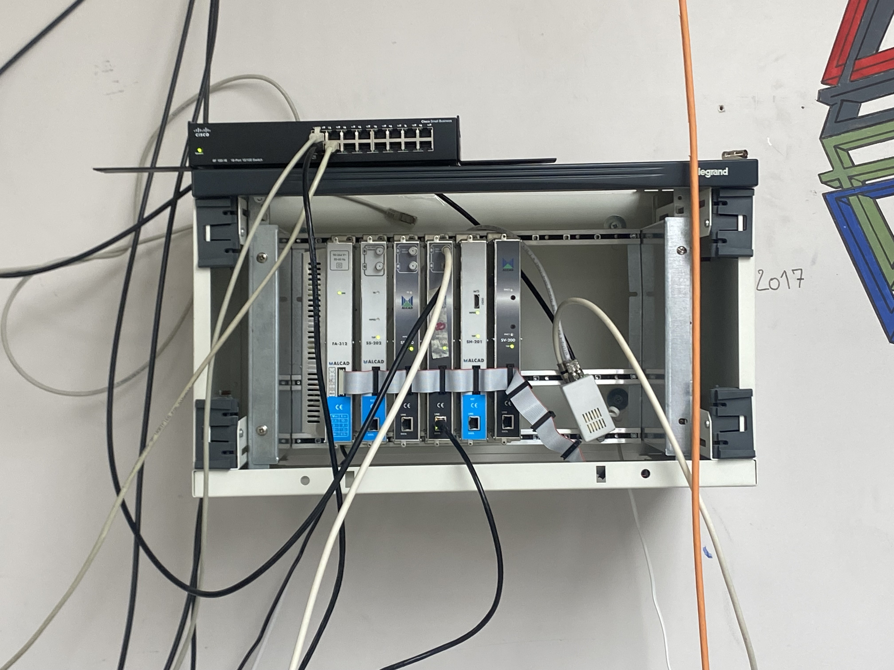
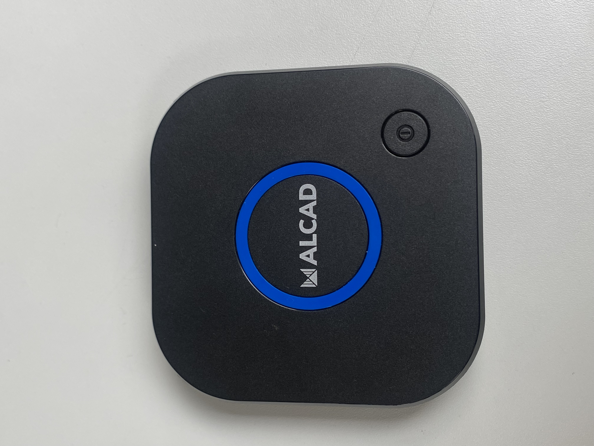
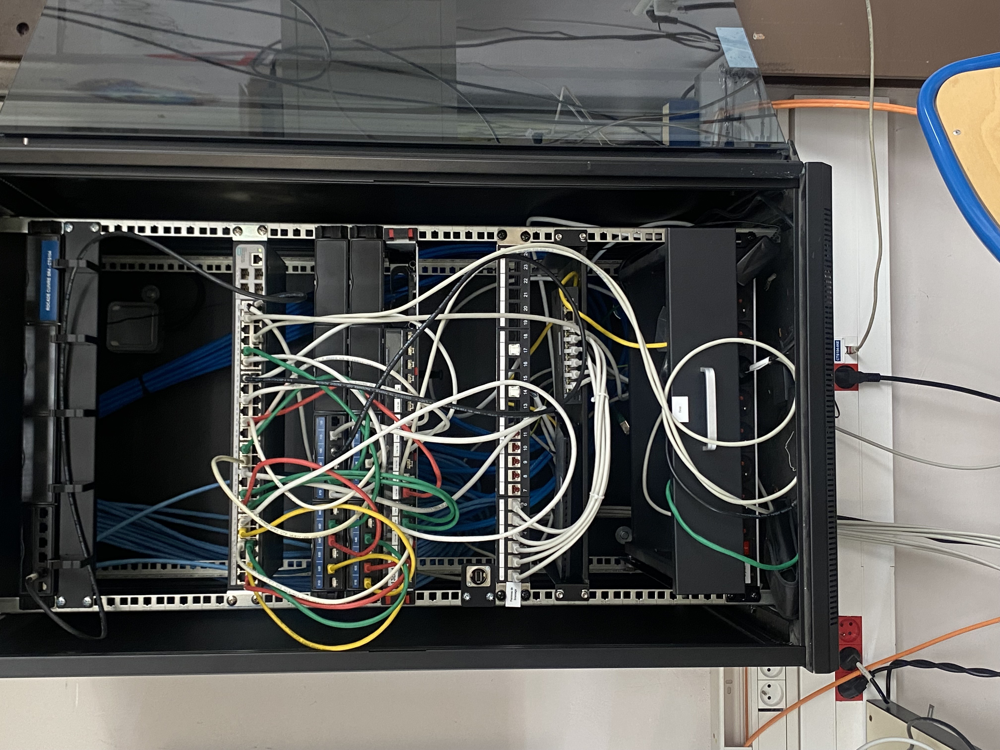
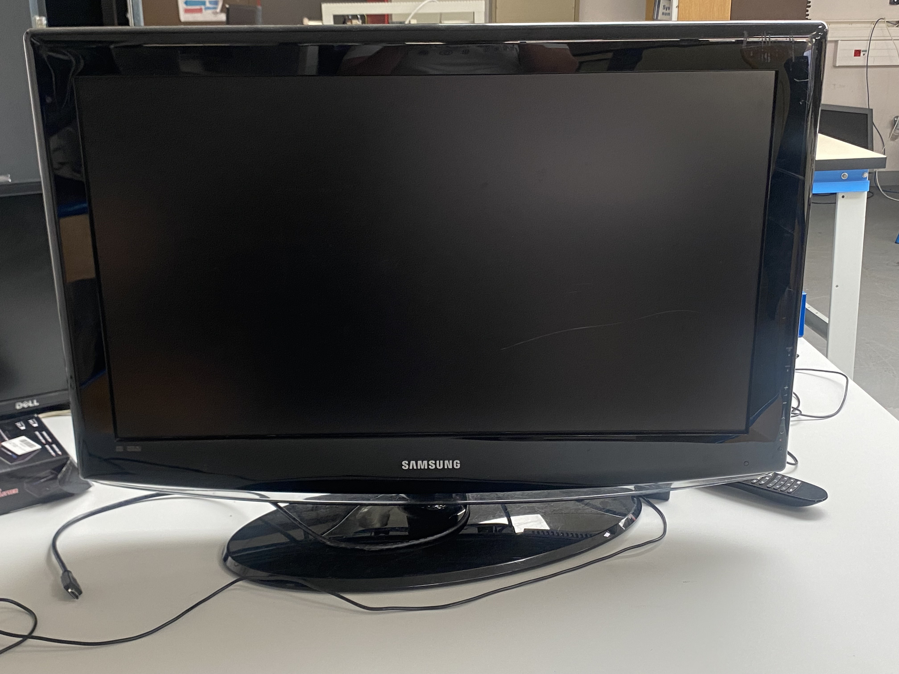
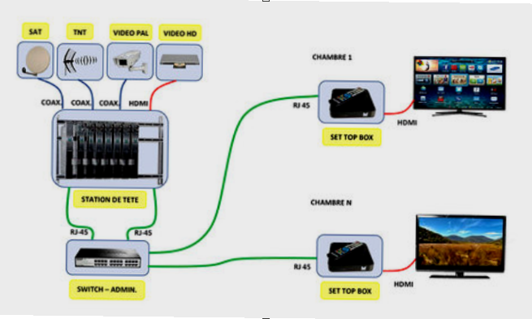
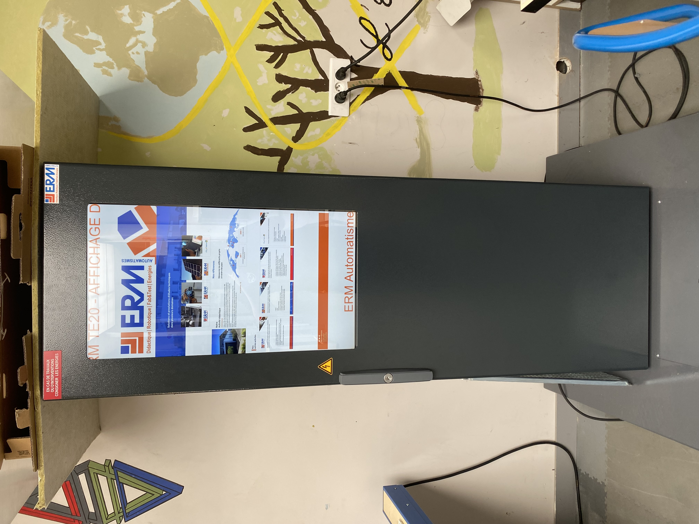
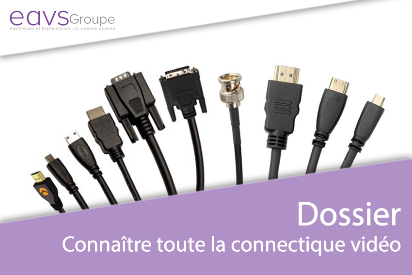
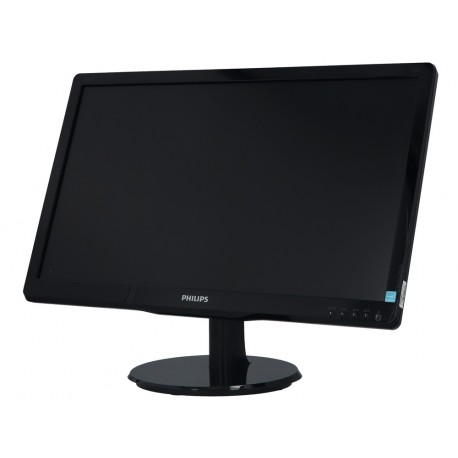

Expérience : Stage 1
Lycée Polyvalent Aragon-Picasso
Givors, Académie de LyonDéploiement d'une solution IPTV
🏢 Présentation de l'établissement
Enseignement secondaire & supérieur (général, techno, pro, BTS) accueillant entre 1 500 et 1 600 élèves. L'équipe comprend le personnel éducatif, des enseignants sur plusieurs filières, ainsi que le personnel vie scolaire et technique.
Département Informatique (DSI - Direction des Systèmes d'Information)
- 👉 Interne : Support quotidien au lycée, gestion du réseau, dépannage des ordinateurs, aide pour l'ENT.
- 👉 Externe : Services techniques gérés à l’extérieur (hébergement de l'ENT, maintenance des serveurs, sécurité informatique).

Mon Projet
🛠 Démarche
1. Test initial des antennes TNT
Pour vérifier la réception des signaux, nous avons connecté les antennes TNT aux boîtiers ALCAD à l’aide de câbles RJ45. Les résultats ont permis de confirmer la bonne réception des signaux TNT.

2. Configuration réseau de la station de tête
- 🌐 Adresse IP : 192.168.170.X (attribuée en IPv4 statique, X variant entre 18 et 22 selon le plan d’adressage)
- 🛣️ Passerelle par défaut : 192.168.170.254
- 🔗 DNS : 80.10.246.2 (fourni par l’établissement)

3. Branchement et structuration réseau
L’ensemble des branchements et la structuration réseau des appareils est connecté via la baie de brassage et le switch Cisco SF-100-16.
Chaque équipement a été relié à une prise réseau configurée.

4. Accès aux chaînes IPTV
Accès aux chaînes IPTV ensuite pour vérification de la bonne diffusion.
Téléviseur utilisé : Samsung LE32R81B

✅ Conclusion
L’installation permet de distribuer des chaînes IPTV dans un environnement structuré via une station de tête, tout en s’appuyant sur des ressources réseau internes. Cette configuration offre une solution évolutive pour la diffusion multi-chaînes dans un établissement scolaire ou tout autre environnement institutionnel.

Autres missions réalisées
ERM à distance
Pilotage via PC portable fournisseur.

Test de matériel
Vérification boîtiers IPTV, câbles et TV.

Cours Terminales
Sensibilisation RGPD, CNIL et bases HTML.
Remplacement écran
Passage sur Philips avec DisplayPort.

Conclusion
Ce stage m'a apporté des compétences en matière d'autonomie et la capacité de répondre aux besoins d'un utilisateur.